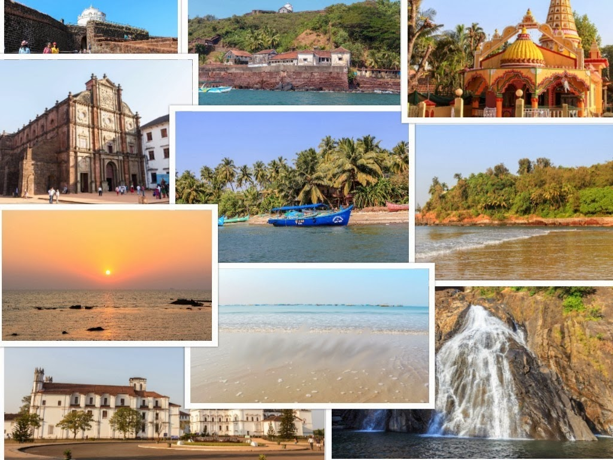

Mahabaleshwar
Mahabaleshwar is a hill station located in the Western Ghats, in Satara district of Maharashtra. Apart from its strawberries, Mahabaleshwar is also well known for its numerous rivers, magnificent cascades and majestic peaks. It is among the
Read More

Lonavala
Lonavala is one of the twin hill stations - Lonavala and Khandala (these two can be easily visited together). The popular tourist attractions in Lonavala are Bhaja caves, Bushi dam, Karla caves ...
Read More

Goa
Goa along with being a popular beach destination in India is a perfect honeymoon destination, a great getaway...
Read More

Manali
With spectacular valleys, breathtaking views, snowcapped mountains...
Read More

Maldives
The journey time to The Maldives varies from two and a half hours, for direct flights, to almost 10 hours for flights that have long layovers.The duration is often...
Read More

Bali
Bali is a large island and traffic can be chaotic in tourist areas. Some recommend planning a way to get around if you want to explore more than your hotel...
Read More

Kerala
Kerala is South India's most serenely beautiful state. This slender coastal strip is defined by its layered landscape: almost 373 miles (600km) of glorious Arabian Sea coast and beaches; a languid network
Read More

Pune
Pune is also home to the Osho International Meditation Ashram as well as the headquarters of the Iyengar Yoga Institute. Famous for adventure activities.
Read More

Kanyakumari
Avoid traveling to Kanyakumari in December and January when crowds are at their peak.
Read More